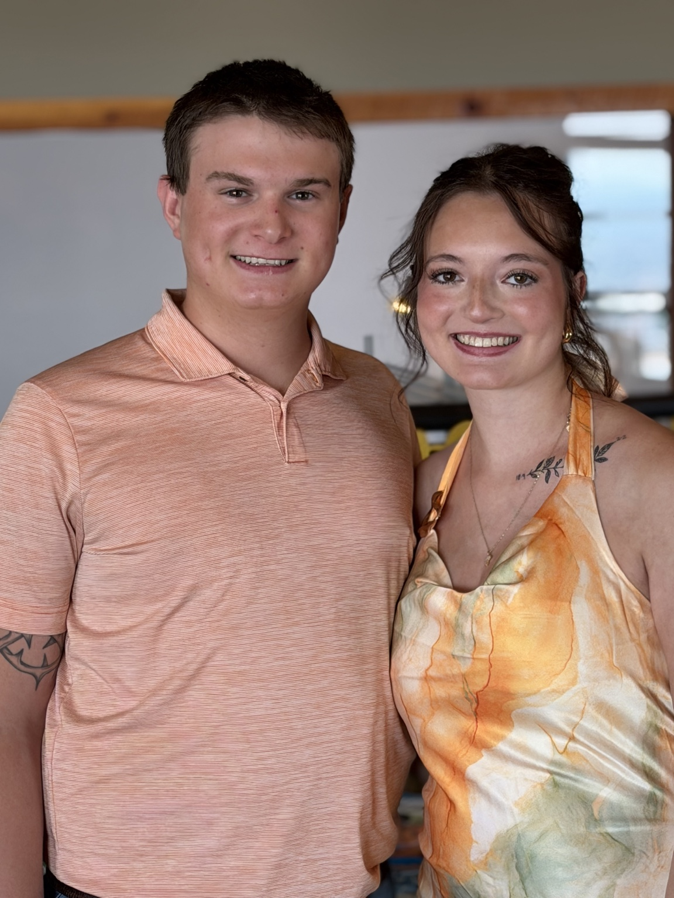

Welcome to my personal website!

Hi! My name is Josiah, I am married to my beautiful wife, Meleya (pictured with me above), and a father to Ronan (not quite born yet but end of November!) I'm also a student at Montana Technological University studying cybersecurity. I enjoy learning about technology, developing new skills, and working on projects that challenge me.
This portfolio showcases the websites and projects I've created throughout my MART 145 course.
A five-page website about my interest in recreational handgun shooting, range safety, and target practice.
More projects will be added as I continue learning web development!